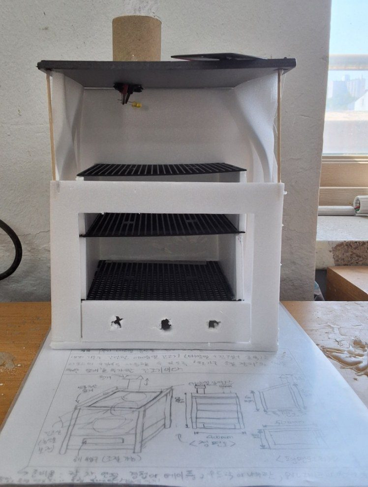
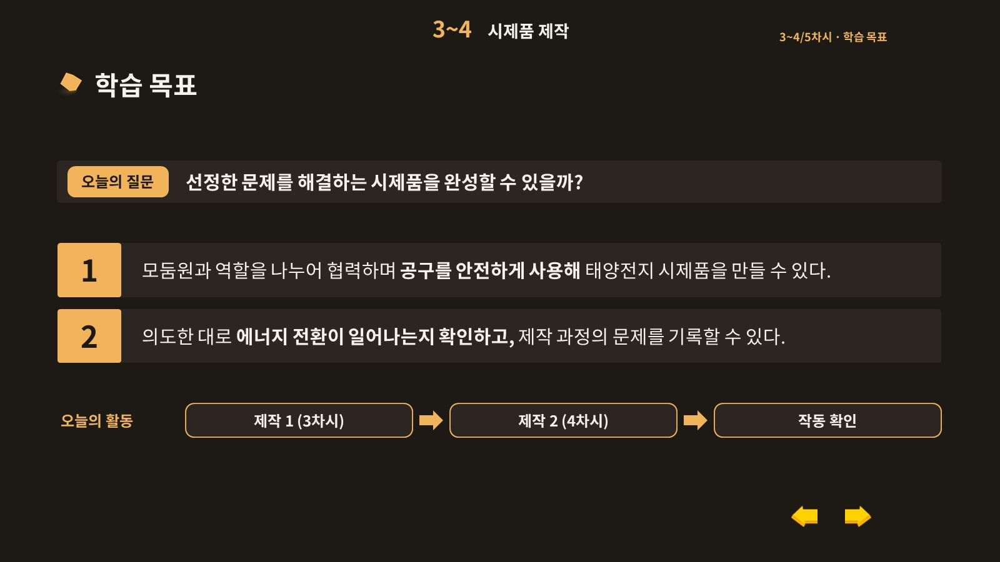
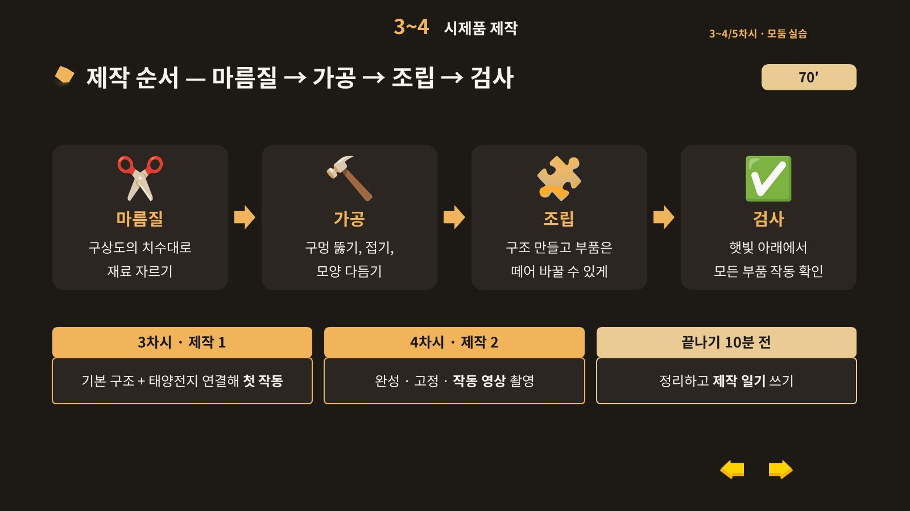
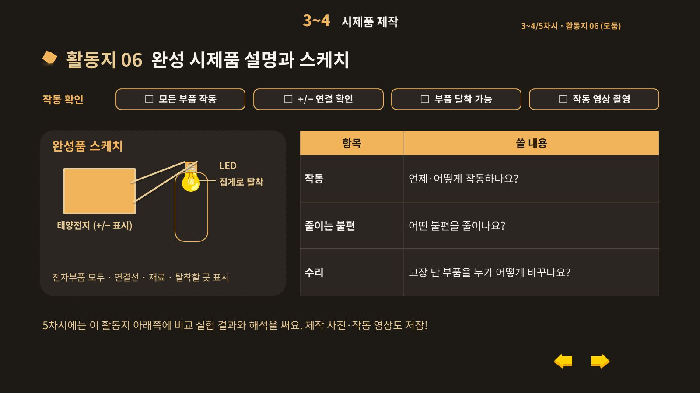
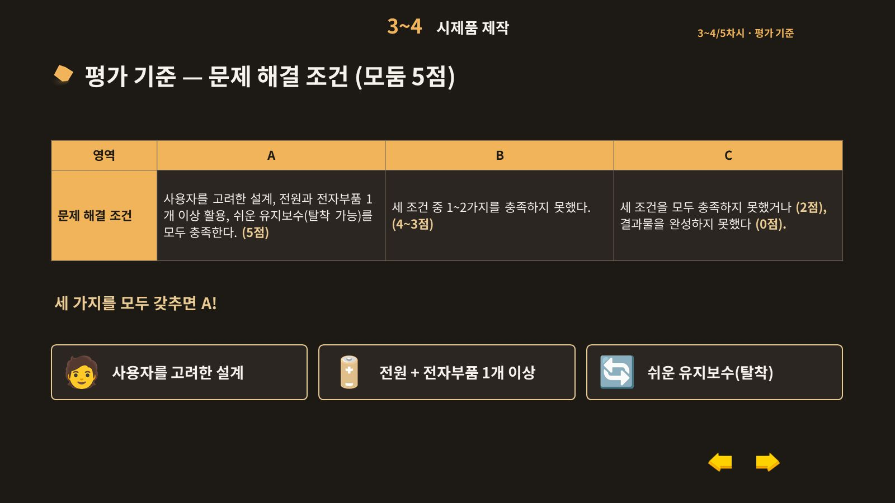

05 기술 · 4차시 / 5
제작 2 — 완성하고 검사해요
오늘의 목표구조를 완성하고 전자부품을 떼어 바꿀 수 있게 고정한 뒤, 햇빛 아래에서 모든 부품이 작동하는지 검사하고 작동 영상과 작품 설명을 남겨요.

수업 흐름
도입 · 지난 기록5분
제작 2 · 완성·검사·영상35분
정리 · 제작 일기10분
← → 키로 단계를 넘겨요. 교사 모드를 켜면 지도안의 발문과 유의점이 함께 보여요.
지난 제작 일기의 ‘문제’부터 읽어요

4차시 도입 5분: 지난 제작 일기의 ‘문제가 발생한 부분’을 읽고 오늘 할 일을 정함(지도안).
오늘의 질문
선정한 문제를 해결하는 시제품을 완성할 수 있을까?
- 모둠원과 역할을 나누어 협력하며 공구를 안전하게 사용해 태양전지 시제품을 만들 수 있다.
- 의도한 대로 에너지 전환이 일어나는지 확인하고, 제작 과정의 문제를 기록할 수 있다.
오늘의 활동: 제작 1(3차시) → 제작 2(4차시) → 작동 확인

제작 2 — 완성하고 검사해요
구조를 완성하고 외관과 고정 상태를 다듬어요. 전자부품은 떼어 바꿀 수 있게 붙이고, 햇빛 아래에서 모든 부품이 작동하는지 검사해요.
완성구조 마무리
고정부품은 떼어 바꿀 수 있게
검사햇빛 아래 모든 부품

평가 후 직접 분리배출하므로 글루건은 필요한 곳에만. 작동하지 않으면 극성(+/−), 끊어진 곳, 단락을 먼저 확인.
작동하지 않으면? — 차례대로 확인해요
1. 극성이 맞나요?→ LED·부저의 +/−를 뒤집어 다시 연결해요.
2. 끊어진 곳은 없나요?→ 빠진 선을 다시 연결하고 고정해요.
3. +와 −가 바로 닿지 않았나요?→ 닿은 부분을 떼고 선이 겹치지 않게 해요.
작동!
고친 내용은 제작 일기에: 증상 → 확인한 원인 → 바꾼 점 → 다시 확인한 결과

작동 영상 찍기 · 완성 시제품 설명
- 햇빛 아래에서 모든 부품 작동
- +/− 연결 확인
- 부품 탈착 가능
- 작동 영상 촬영
| 항목 | 쓸 내용 |
|---|---|
| 작동 | 언제·어떻게 작동하나요? |
| 줄이는 불편 | 어떤 불편을 줄이나요? |
| 수리 | 고장 난 부품을 누가 어떻게 바꾸나요? |
모둠 활동완성품 스케치(전자부품·연결선·재료·탈착할 곳 표시)는 종이에, 작품 설명은 아래 활동지 06에 써요.

완성하면 작동 영상을 찍음(지도안 ‘작동 확인 · 완성 후’). 활동지 06 아래쪽(비교 실험 결과와 해석)은 5차시에 씀. 제작 사진·작동 영상도 저장.
정리하고 제작 일기 쓰기
| 예시 · 문제와 해결 쓰기 | |
|---|---|
| 증상 | 햇빛 아래에서 LED가 안 켜짐 |
| 원인 | LED 다리를 반대로 꽂음 |
| 해결 | 뒤집어 다시 연결 → 켜짐! |
| 다음 할 일 | 집게 전선으로 바꿔 떼어 바꾸기 쉽게 |
종료 확인
- 글루건 전원 분리
- 정리 완료
- 사진·기록 저장
- 자리 정리
개인 활동아래 활동지 05 · 제작 ②를 써요.
끝나기 10분 전에 공구와 자리를 정리하고 제작 일기를 씀. 글루건 전원을 뽑고 정리 상태를 확인.
문제 해결 조건 — 세 가지를 모두 갖추면 A!
사용자를 고려한 설계
전원 + 전자부품 1개 이상
쉬운 유지보수(탈착)
A 모두 충족(5점) · B 1~2가지 미충족(4~3점) · C 모두 미충족(2점) 또는 미완성(0점)

[12기가05-04] 산출물 평가: 태양전지에 전자부품을 연결한 시제품이 사용자를 고려한 설계, 전원과 전자부품 1개 이상 활용, 쉬운 유지보수(탈착)의 조건을 충족하는지 봄.
활동지
활동지 05 · 06 — 완성하고 설명해요
쓴 내용은 이 기기의 브라우저에만 저장돼요. 완성품 스케치는 종이 활동지에 그려요.
활동지 05 · 제작 일기 — 제작 ② 4차시 (개인)
1내가 완성한 부분
2잘 된 점·협력
3문제와 해결
- 글루건 전원 분리
- 정리 완료
- 사진·기록 저장
- 자리 정리
활동지 06 · 완성 시제품 설명 (모둠)
- 햇빛 아래에서 모든 부품 작동
- +/− 연결 확인
- 부품 탈착 가능
- 작동 영상 촬영
1제목과 담당
2작동
3줄이는 불편
4수리
5차시에는 이 활동지 아래쪽에 비교 실험 결과와 해석을 써요. 제작 사진·작동 영상도 저장!
이 차시 슬라이드
3·4차시는 같은 슬라이드(31~39장)를 함께 써요. 오늘은 34~39장을 중심으로 봐요.
나가기 질문
우리 시제품은 문제 해결 조건 세 가지(사용자 고려 · 전원+전자부품 · 쉬운 탈착) 가운데 무엇을 갖췄나요? 부족한 것은?